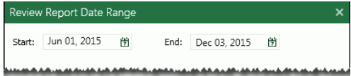

Run an Eclipse report as follows:
Log in to Eclipse and open the needed case or batch.
In the Case View pane, click Reports.
Click the needed report.
For reports that require additional selections, make the selection(s) and click OK. Report options are listed in the following table (reports not listed require no user selections).
|
Report |
Description |
|
Case Data Summary |
Select the field upon which the report should be organized. |
|
Gap |
Select fields containing beginning/ending document data—BEGDOC/ENDDOC, production-number fields (Begin/End Bates selections during production), or other document-numbering fields. |
|
Privileged |
Select tags to be included in the report. |
|
Review Audit |
Select the following items:
Tag Group: Select the tag group to be evaluated for inconsistencies. Optional:
|
|
Review Status by Custodian |
Select the review pass of interest and field upon which the report should be organized. |
|
Review Status by Reviewer |
Select the review pass of interest. |
|
Reviewer Edits per Day |
Enter or click to select the starting and ending dates of the time period of interest. Any common date format can be entered.
 |
|
Reviewer History |
|
|
Reviewer History Detail |
|
|
Summary by Custodian |
Select the review pass of interest and field upon which the report should be organized. |
|
TAR Reports |
See Manage TAR Projects for details. |
|
Transcript Reports |
Generate reports on transcript annotations or searches. |
After the report is generated, review results in the Reports tab. Use the following actions as needed:
Scroll vertically and/or horizontally to view all information or click in the report and press the PgUp and PgDn keys for easy scrolling.
Click a column heading to sort by that column.
Enlarge or reduce a column’s width by dragging the right or left edge of the column’s heading.